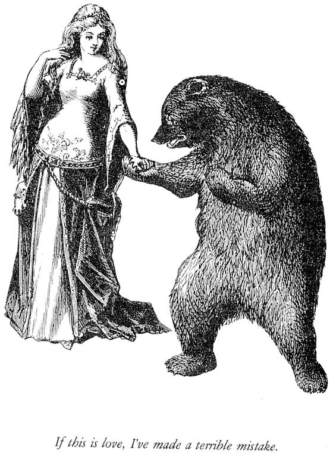

| | -->
| | -->

|
Liliana Paola Mamani Sanchez mamanisl AT cs DOT tcd DOT ie |
 From the book "The transitive vampire : a handbook of grammar for the innocent, the eager and the doomed" (1985). |
|---|
| |
| I live in
Dublin, Ireland I just got graduated as a PhD in Computer Science (2005)! Specifically, from the Computational Linguistic Group at Trinity College. My interests in Computational Linguistics are motivated by the desire of studying linguistic phenomena as genuine expressions that cannot be replaced solely by counts and bits. On the other hand, I love to build stuff, so you will finding at any stage trying to learn new wyas of how to use and create software. Currently my research is focused in Speculation detection, profiling of sentiment in text and author categorization. I share my time between my different interests and despite of acting in the scientific-technology human activity I try to find something else that stops life of becoming a Asimovian horror tale. |
 |
||